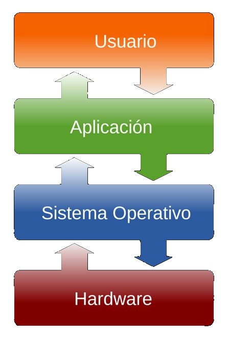
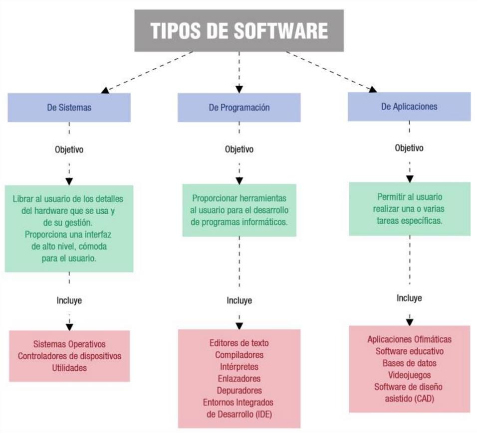
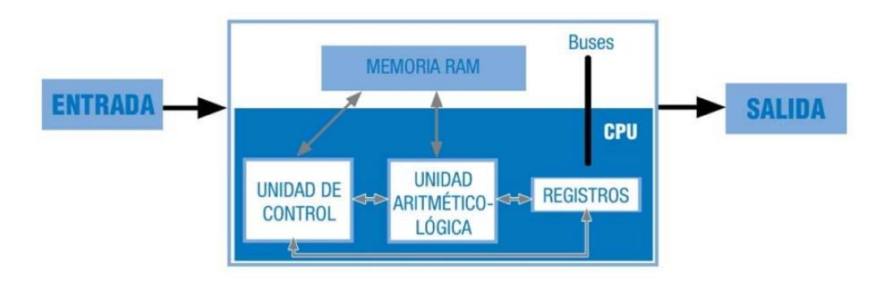

Introducción al desarrollo de software
Glosario
- Bytecode: código interpretable directamente para una máquina virtual.
- Código máquina: instrucciones compuestas por unos y ceros interpretables directamente por el hardware.
- Criptografía: arte o ciencia cuyo objetivo es alterar el contenido de un mensaje haciéndolo ininteligible a los receptores que no estén autorizados.
- GUI: acrónimo del inglés graphical user interface (interfaz gráfica de usuario).
- Hilo de ejecución: unidad de procesamiento más pequeña que puede ser planificada por un sistema operativo.
- Proceso (o programa): puede tener varios hilos de ejecución, lo que implica que están ejecutándose concurrentemente al mismo tiempo distintas instrucciones.
- Lenguaje de bajo nivel: aquel que es parecido al código máquina. Cuanto más bajo nivel tenga el lenguaje, más cercano al código máquina será.
- Parámetro: valor que se pasa a un software para que este, en su ejecución, tome las medidas oportunas en función de lo indicado por dicho valor.
- Patrón de diseño: preestructura de aplicación. Existe una multitud de tipo estándar y su mayor ventaja es la robustez, además de que muchos desarrolladores los conocen, con lo cual comprender, desarrollar y mantener la aplicación será más fácil.
- Portabilidad: facilidad que tiene un software para ejecutarse en diferentes máquinas, diferentes entornos y diferentes sistemas operativos. Cuanto más portable sea un software, en más equipos podrá ejecutarse.
Introducción
Cuando se desarrollaron las primeras computadoras, eran muy pocas las herramientas que se tenían para controlarlas. En aquel entonces se desarrollaron algoritmos para realizar ciertas tareas pero sin poder automatizarlas como tal.
Es ahí cuando nace la necesidad de unir varios algoritmos para crear herramientas más complejas que permiten controlar funciones más potentes de los ordenadores de la época. Estos son conocidos como programas informáticos, y su aparición ayudó a moldear la manera en la que utilizamos las computadoras actualmente.
Con su aparición se aceleró el crecimiento de las tecnologías informáticas, e hizo necesaria la creación de equipos más potentes que a su vez pudieran ejecutar programas más veloces y eficientes.
Concepto de programa informático
El software es el conjunto de programas informáticos que actúan sobre el hardware para ejecutar lo que el usuario desee.
El software es la parte intangible de un sistema informático, el equivalente al equipamiento o soporte lógico. Lo constituyen los componentes lógicos (no físicos) y, por tanto, no tangibles. Todo software está diseñado para realizar una tarea determinada en nuestro sistema.
El software es el encargado de comunicarse con el hardware, es decir, se encarga de traducir todas las órdenes que el usuario comunica al software en órdenes comprensibles por el hardware.
Puede definirse software como "el conjunto de los programas de cómputo, procedimientos, reglas, documentación y datos asociados que forman parte de las operaciones de un sistema de computación" (definición extraída del estándar 729 de IEEE).
El concepto de software fue utilizado por Charles Babbage (1791-1871) hace mucho tiempo. Cuando trabajaba en su máquina diferencial, utilizaba series de instrucciones que se leían desde la memoria principal del sistema, y a esta serie de instrucciones las denominaba software.
Posteriormente, Alan Turing (1912-1954) profundizó en el concepto de software. Éste desarrolló su carrera como matemático, pero destacó en su momento como informático y criptógrafo. Sin embargo, sus logros se vieron truncados, ya que, tras ser acusado y procesado por ser homosexual, se suicidó. Turing contribuyó a descifrar la máquina Enigma de los alemanes durante la Segunda Guerra Mundial, elaboró la máquina de Turing y desarrolló la teoría de la computación, la cual se tiene como referente hoy en día y forma parte del origen del software moderno. Se considera a Turing uno de los padres de la ciencia de la computación, antecedente de la informática moderna.

La palabra software, entendida como tal, la empleó por primera vez John Wilder Tukey (1915-2000) en un artículo de la revista American Mathematical Monthly en 1958. En este artículo, donde se empleó el término computer software por primera vez, se hablaba de aprovechar las capacidades de cálculo de los ordenadores de tal manera que los programadores pudiesen escribir conjuntos de instrucciones (programas), los cuales podrían llegar a ser complejos, que luego se traducirían en otras más comprensibles para las máquinas en las que fueran a ser ejecutadas. Como puede observarse, se establecían las bases de los modernos compiladores. J. W. Tukey también creó otro término imprescindible en la tecnología computacional, la palabra bit como contracción de "dígito binario", por su abreviación del inglés binary digit.
Como todo el mundo sabe, el software tiene una serie de características muy particulares que lo definen. Estas características son las siguientes:
- El software es lógico, no físico. Es intangible.
- El software se desarrolla, no se fabrica. Es mejor decir desarrolladores de software que fabricantes de software.
- El software no se estropea y una copia suya da lugar a un clon con las mismas características del original.
- En ocasiones, puede construirse a medida. Existe software a medida y software enlatado.
Clasificación de los tipos de programas informáticos
Existen distintos tipos de software según el objetivo para el cual han sido desarrollados. A continuación se muestran los distintos tipos de software de acuerdo a este cometido:
1. Software de aplicación
Contiene todos y cada uno de esos programas y utilidades que derivan de una programación de software y que cumplen una tarea específica, en casi cualquier área de la vida diaria, que se usan a través de dispositivos móviles y computadores. Son el producto final que se ofrece al consumidor. Algunos ejemplos de software de aplicación:
- Aplicaciones de ofimática: son todas aquellas utilidades informáticas que están diseñadas para tareas de oficina con el objetivo de optimizar, automatizar y mejorar las tareas en esta actividad.
- Bases de datos: colección de información digital de manera organizada para que un especialista pueda acceder a fragmentos en cualquier momento.
- Videojuegos: juegos electrónicos donde una o más personas interactúan con imágenes de video a través de controles físicos o movimientos corporales.
- Software empresarial: puede decirse que es toda aquella aplicación que está creada para optimizar, automatizar o medir la productividad de alguna industria o empresa.
- Software educativo: todos aquellos productos digitales que tienen como objetivo enseñar algún tema en específico al usuario de cualquier nivel y facilitar el proceso de aprendizaje.
- Software de gestión: sistema integrado por varias herramientas para ser utilizado en tareas relacionadas con la administración o el cálculo numérico.
2. Software de programación
A través del conocimiento lógico y de los distintos lenguajes de programación existentes en el mercado, es posible diseñar utilidades digitales para que ejerzan diversas funciones. Estos programas son la base donde se escribe el código para desarrollar nuevos programas informáticos.
- Editores de texto: sirven para crear y gestionar archivos digitales compuestos por texto. Cumplen con la función de leer el archivo e interpretar los bytes según el código del editor.
- Compilador: una especie de traductor que edifica el lenguaje de programación a un programa en sí.
- Intérprete: básicamente es un programa que analiza y transforma información sobre otros programas.
- Enlazador: este toma los objetos iniciales del proceso de compilación, descarta los no necesarios y enlaza un código abierto con la biblioteca interna y produce un archivo ejecutable.
- Depuradores: programa que sirve para "limpiar" errores de otros programas.
- IDE: los entornos de desarrollo integrado es una aplicación que le brinda al programador servicios integrales para facilitar el desarrollo de software.
3. Software de sistema
Llegamos a la base donde se ejecutan los dos anteriores. Dentro de los tipos de software, el de sistema es el más importante. Es quien le permite al usuario usar la interfaz del sistema operativo que viene incorporado al dispositivo. Este está compuesto por un conjunto de programas u aplicaciones nativas que tienen dos propósitos:
- Gestionar recursos físicos del aparato para coordinar tareas y administrar la memoria para el uso del mismo.
- Ofrecer una experiencia de uso para que se pueda controlar e interactuar con el sistema.
De manera simple, podemos decir que el software de sistema es quien conecta las aplicaciones con los recursos de hardware que tiene el dispositivo.
- Cargador de programa: parte del sistema operativo que cumple con la función de enviar información a la memoria del sistema para ejecutar programas.
- Sistemas operativos: sistema que gestiona los recursos de hardware y brinda la posibilidad de lanzar aplicaciones al usuario.
- Controladores: programas que permiten al sistema operativo realizar interacciones entre el hardware y la interfaz de usuario para utilizar el dispositivo.
- Herramientas de diagnóstico: sirven para monitorear y controlar la funcionalidad de los recursos físicos del dispositivo.
- Servidores: herramientas de ejecución que sirven para recibir las indicaciones del usuario y realizar una acción en concordancia.
El programa informático
Un programa es una serie de órdenes o instrucciones secuenciadas u ordenadas con una finalidad concreta y que realizan una función determinada. Véase el típico programa Hola Mundo desarrollado en lenguaje C:
El texto anterior representa un ejemplo de lo que sería un programa. Se compone de 6 líneas, que van a comentarse a continuación:
Esta línea no realiza ninguna función, solo dice cuál es el nombre del programa.
Esta línea es necesaria si va a sacarse algo por pantalla.
Esta línea indica que esto es lo primero que va a ejecutar el programa (lo contenido entre { y }).
Esta línea muestra las palabras Hola Mundo por pantalla.
En resumen, este programa mostrará las palabras Hola Mundo por pantalla.

Software a medida
Un software a medida es una o varias aplicaciones realizadas según los requerimientos e instrucciones de una empresa u organismo. Dichos programas se amoldan o adecuan a la actividad desarrollada y son diseñados a la medida del organismo, su forma de trabajar y sus necesidades. Algunas características del software a medida son las siguientes:
- Como todo software, necesita un tiempo de desarrollo.
- Se adapta a las necesidades específicas de la empresa. Eso implica que, en ocasiones, ese software no sea trasladable a otras empresas diferentes (incluso a otras empresas del mismo sector).
- Generalmente, suele contener errores y se necesita una etapa de mantenimiento en la que se subsanan y se mejora dicho software.
- En general, es más costoso que el software estándar, debido a que el precio lo soporta un solo cliente. En el software enlatado o estándar, ese precio se comparte entre los distintos compradores.
El software estándar o enlatado es un software genérico (válido para cualquier cliente potencial), que resuelve múltiples necesidades. Normalmente, para hacerlo más adaptable, dicho software tiene herramientas de configuración que lo parametrizan y lo adaptan a las necesidades del cliente. En ocasiones, no es el software ideal, puesto que le faltan opciones, procedimientos y procesos que la empresa realiza y que, a la postre, tendrán que realizarse con otra herramienta. Sus principales características son:
- Se compra ya hecho. El software ya fue desarrollado en su momento y lo único que podría hacerse es adaptarlo a las necesidades de la empresa.
- Suele tener muchos menos errores que el software a medida, dado que fue probado por múltiples empresas.
- Suele ser más barato que el software a medida, puesto que los costes de desarrollo se reparten entre las múltiples licencias que se venden.
- Generalmente, tiene funciones que la empresa no usará y también carecerá de otras opciones. Por regla general, no se adapta completamente a las necesidades de una empresa (es más, a veces, la empresa tiene que adaptarse al software).
Relación entre el hardware y el software
Como sabemos, al conjunto de dispositivos físicos que conforman un ordenador se le denomina hardware. Existe una relación indisoluble entre éste y el software, ya que necesitan estar instalados y configurados correctamente para que el equipo funcione.
El software se ejecutará sobre los dispositivos físicos. La primera arquitectura hardware con programa almacenado se estableció en 1946 por John Von Neumann:

Esta relación software-hardware la podemos poner de manifiesto desde dos puntos de vista:
Desde el punto de vista del sistema operativo
El sistema operativo es el encargado de coordinar al hardware durante el funcionamiento del ordenador, actuando como intermediario entre éste y las aplicaciones que están corriendo en un momento dado.
Todas las aplicaciones necesitan recursos hardware durante su ejecución (tiempo de CPU, espacio en memoria RAM, tratamiento de interrupciones, gestión de los dispositivos de Entrada/Salida, etc.). Será siempre el sistema operativo el encargado de controlar todos estos aspectos de manera "oculta" para las aplicaciones (y para el usuario).
Desde el punto de vista de las aplicaciones
Ya hemos dicho que una aplicación no es otra cosa que un conjunto de programas, y que éstos están escritos en algún lenguaje de programación que el hardware del equipo debe interpretar y ejecutar.
Hay multitud de lenguajes de programación diferentes (como ya veremos en su momento). Sin embargo, todos tienen algo en común: estar escritos con sentencias de un idioma que el ser humano puede aprender y usar fácilmente. Por otra parte, el hardware de un ordenador sólo es capaz de interpretar señales eléctricas (ausencias o presencias de tensión) que, en informática, se traducen en secuencias de 0 y 1 (código binario).
Esto nos hace plantearnos una cuestión: ¿cómo será capaz el ordenador de "entender" algo escrito en un lenguaje que no es el suyo? Como veremos a lo largo de esta unidad, tendrá que pasar algo (un proceso de traducción de código) para que el ordenador ejecute las instrucciones escritas en un lenguaje de programación.